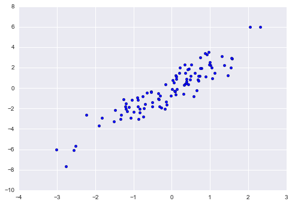

这部分内容转载自: Python DataScience Handbook
The Basics of NumPy Arrays
Data manipulation in Python is nearly synonymous with NumPy array manipulation: even newer tools like Pandas (Chapter 3) are built around the NumPy array.
This section will present several examples of using NumPy array manipulation to access data and subarrays, and to split, reshape, and join the arrays.
While the types of operations shown here may seem a bit dry and pedantic, they comprise the building blocks of many other examples used throughout the book.
Get to know them well!
We’ll cover a few categories of basic array manipulations here:
- Attributes of arrays: Determining the size, shape, memory consumption, and data types of arrays
- Indexing of arrays: Getting and setting the value of individual array elements
- Slicing of arrays: Getting and setting smaller subarrays within a larger array
- Reshaping of arrays: Changing the shape of a given array
- Joining and splitting of arrays: Combining multiple arrays into one, and splitting one array into many
NumPy Array Attributes
First let’s discuss some useful array attributes.
We’ll start by defining three random arrays, a one-dimensional, two-dimensional, and three-dimensional array.
We’ll use NumPy’s random number generator, which we will seed with a set value in order to ensure that the same random arrays are generated each time this code is run:
1 | import numpy as np |
Each array has attributes ndim (the number of dimensions), shape (the size of each dimension), and size (the total size of the array):
1 | print("x3 ndim: ", x3.ndim) |
x3 ndim: 3
x3 shape: (3, 4, 5)
x3 size: 60
Another useful attribute is the dtype, the data type of the array (which we discussed previously in Understanding Data Types in Python):
1 | print("dtype:", x3.dtype) |
dtype: int64
Other attributes include itemsize, which lists the size (in bytes) of each array element, and nbytes, which lists the total size (in bytes) of the array:
1 | print("itemsize:", x3.itemsize, "bytes") |
itemsize: 8 bytes
nbytes: 480 bytes
In general, we expect that nbytes is equal to itemsize times size.
Array Indexing: Accessing Single Elements
If you are familiar with Python’s standard list indexing, indexing in NumPy will feel quite familiar.
In a one-dimensional array, the $i^{th}$ value (counting from zero) can be accessed by specifying the desired index in square brackets, just as with Python lists:
1 | x1 |
array([5, 0, 3, 3, 7, 9])
1 | x1[0] |
5
1 | x1[4] |
7
To index from the end of the array, you can use negative indices:
1 | x1[-1] |
9
1 | x1[-2] |
7
In a multi-dimensional array, items can be accessed using a comma-separated tuple of indices:
1 | x2 |
array([[3, 5, 2, 4],
[7, 6, 8, 8],
[1, 6, 7, 7]])
1 | x2[0, 0] |
3
1 | x2[2, 0] |
1
1 | x2[2, -1] |
7
Values can also be modified using any of the above index notation:
1 | x2[0, 0] = 12 |
array([[12, 5, 2, 4],
[ 7, 6, 8, 8],
[ 1, 6, 7, 7]])
Keep in mind that, unlike Python lists, NumPy arrays have a fixed type.
This means, for example, that if you attempt to insert a floating-point value to an integer array, the value will be silently truncated. Don’t be caught unaware by this behavior!
1 | x1[0] = 3.14159 # this will be truncated! |
array([3, 0, 3, 3, 7, 9])
Array Slicing: Accessing Subarrays
Just as we can use square brackets to access individual array elements, we can also use them to access subarrays with the slice notation, marked by the colon (:) character.
The NumPy slicing syntax follows that of the standard Python list; to access a slice of an array x, use this:1
x[start:stop:step]
If any of these are unspecified, they default to the values start=0, stop=size of dimension, step=1.
We’ll take a look at accessing sub-arrays in one dimension and in multiple dimensions.
One-dimensional subarrays
1 | x = np.arange(10) |
array([0, 1, 2, 3, 4, 5, 6, 7, 8, 9])
1 | x[:5] # first five elements |
array([0, 1, 2, 3, 4])
1 | x[5:] # elements after index 5 |
array([5, 6, 7, 8, 9])
1 | x[4:7] # middle sub-array |
array([4, 5, 6])
1 | x[::2] # every other element |
array([0, 2, 4, 6, 8])
1 | x[1::2] # every other element, starting at index 1 |
array([1, 3, 5, 7, 9])
A potentially confusing case is when the step value is negative.
In this case, the defaults for start and stop are swapped.
This becomes a convenient way to reverse an array:
1 | x[::-1] # all elements, reversed |
array([9, 8, 7, 6, 5, 4, 3, 2, 1, 0])
1 | x[5::-2] # reversed every other from index 5 |
array([5, 3, 1])
Multi-dimensional subarrays
Multi-dimensional slices work in the same way, with multiple slices separated by commas.
For example:
1 | x2 |
array([[12, 5, 2, 4],
[ 7, 6, 8, 8],
[ 1, 6, 7, 7]])
1 | x2[:2, :3] # two rows, three columns |
array([[12, 5, 2],
[ 7, 6, 8]])
1 | x2[:3, ::2] # all rows, every other column |
array([[12, 2],
[ 7, 8],
[ 1, 7]])
Finally, subarray dimensions can even be reversed together:
1 | x2[::-1, ::-1] |
array([[ 7, 7, 6, 1],
[ 8, 8, 6, 7],
[ 4, 2, 5, 12]])
Accessing array rows and columns
One commonly needed routine is accessing of single rows or columns of an array.
This can be done by combining indexing and slicing, using an empty slice marked by a single colon (:):
1 | print(x2[:, 0]) # first column of x2 |
[12 7 1]
1 | print(x2[0, :]) # first row of x2 |
[12 5 2 4]
In the case of row access, the empty slice can be omitted for a more compact syntax:
1 | print(x2[0]) # equivalent to x2[0, :] |
[12 5 2 4]
Subarrays as no-copy views
One important–and extremely useful–thing to know about array slices is that they return views rather than copies of the array data.
This is one area in which NumPy array slicing differs from Python list slicing: in lists, slices will be copies.
Consider our two-dimensional array from before:
1 | print(x2) |
[[12 5 2 4]
[ 7 6 8 8]
[ 1 6 7 7]]
Let’s extract a $2 \times 2$ subarray from this:
1 | x2_sub = x2[:2, :2] |
[[12 5]
[ 7 6]]
Now if we modify this subarray, we’ll see that the original array is changed! Observe:
1 | x2_sub[0, 0] = 99 |
[[99 5]
[ 7 6]]
1 | print(x2) |
[[99 5 2 4]
[ 7 6 8 8]
[ 1 6 7 7]]
This default behavior is actually quite useful: it means that when we work with large datasets, we can access and process pieces of these datasets without the need to copy the underlying data buffer.
Creating copies of arrays
Despite the nice features of array views, it is sometimes useful to instead explicitly copy the data within an array or a subarray. This can be most easily done with the copy() method:
1 | x2_sub_copy = x2[:2, :2].copy() |
[[99 5]
[ 7 6]]
If we now modify this subarray, the original array is not touched:
1 | x2_sub_copy[0, 0] = 42 |
[[42 5]
[ 7 6]]
1 | print(x2) |
[[99 5 2 4]
[ 7 6 8 8]
[ 1 6 7 7]]
Reshaping of Arrays
Another useful type of operation is reshaping of arrays.
The most flexible way of doing this is with the reshape method.
For example, if you want to put the numbers 1 through 9 in a $3 \times 3$ grid, you can do the following:
1 | grid = np.arange(1, 10).reshape((3, 3)) |
[[1 2 3]
[4 5 6]
[7 8 9]]
Note that for this to work, the size of the initial array must match the size of the reshaped array.
Where possible, the reshape method will use a no-copy view of the initial array, but with non-contiguous memory buffers this is not always the case.
Another common reshaping pattern is the conversion of a one-dimensional array into a two-dimensional row or column matrix.
This can be done with the reshape method, or more easily done by making use of the newaxis keyword within a slice operation:
1 | x = np.array([1, 2, 3]) |
array([[1, 2, 3]])
1 | # row vector via newaxis |
array([[1, 2, 3]])
1 | # column vector via reshape |
array([[1],
[2],
[3]])
1 | # column vector via newaxis |
array([[1],
[2],
[3]])
We will see this type of transformation often throughout the remainder of the book.
Array Concatenation and Splitting
All of the preceding routines worked on single arrays. It’s also possible to combine multiple arrays into one, and to conversely split a single array into multiple arrays. We’ll take a look at those operations here.
Concatenation of arrays
Concatenation, or joining of two arrays in NumPy, is primarily accomplished using the routines np.concatenate, np.vstack, and np.hstack.np.concatenate takes a tuple or list of arrays as its first argument, as we can see here:
1 | x = np.array([1, 2, 3]) |
array([1, 2, 3, 3, 2, 1])
You can also concatenate more than two arrays at once:
1 | z = [99, 99, 99] |
[ 1 2 3 3 2 1 99 99 99]
It can also be used for two-dimensional arrays:
1 | grid = np.array([[1, 2, 3], |
1 | # concatenate along the first axis |
array([[1, 2, 3],
[4, 5, 6],
[1, 2, 3],
[4, 5, 6]])
1 | # concatenate along the second axis (zero-indexed) |
array([[1, 2, 3, 1, 2, 3],
[4, 5, 6, 4, 5, 6]])
For working with arrays of mixed dimensions, it can be clearer to use the np.vstack (vertical stack) and np.hstack (horizontal stack) functions:
1 | x = np.array([1, 2, 3]) |
array([[1, 2, 3],
[9, 8, 7],
[6, 5, 4]])
1 | # horizontally stack the arrays |
array([[ 9, 8, 7, 99],
[ 6, 5, 4, 99]])
Similary, np.dstack will stack arrays along the third axis.
Splitting of arrays
The opposite of concatenation is splitting, which is implemented by the functions np.split, np.hsplit, and np.vsplit. For each of these, we can pass a list of indices giving the split points:
1 | x = [1, 2, 3, 99, 99, 3, 2, 1] |
[1 2 3] [99 99] [3 2 1]
Notice that N split-points, leads to N + 1 subarrays.
The related functions np.hsplit and np.vsplit are similar:
1 | grid = np.arange(16).reshape((4, 4)) |
array([[ 0, 1, 2, 3],
[ 4, 5, 6, 7],
[ 8, 9, 10, 11],
[12, 13, 14, 15]])
1 | upper, lower = np.vsplit(grid, [2]) |
[[0 1 2 3]
[4 5 6 7]]
[[ 8 9 10 11]
[12 13 14 15]]
1 | left, right = np.hsplit(grid, [2]) |
[[ 0 1]
[ 4 5]
[ 8 9]
[12 13]]
[[ 2 3]
[ 6 7]
[10 11]
[14 15]]
Similarly, np.dsplit will split arrays along the third axis.
Computation on NumPy Arrays: Universal Functions
Up until now, we have been discussing some of the basic nuts and bolts of NumPy; in the next few sections, we will dive into the reasons that NumPy is so important in the Python data science world.
Namely, it provides an easy and flexible interface to optimized computation with arrays of data.
Computation on NumPy arrays can be very fast, or it can be very slow.
The key to making it fast is to use vectorized operations, generally implemented through NumPy’s universal functions (ufuncs).
This section motivates the need for NumPy’s ufuncs, which can be used to make repeated calculations on array elements much more efficient.
It then introduces many of the most common and useful arithmetic ufuncs available in the NumPy package.
The Slowness of Loops
Python’s default implementation (known as CPython) does some operations very slowly.
This is in part due to the dynamic, interpreted nature of the language: the fact that types are flexible, so that sequences of operations cannot be compiled down to efficient machine code as in languages like C and Fortran.
Recently there have been various attempts to address this weakness: well-known examples are the PyPy project, a just-in-time compiled implementation of Python; the Cython project, which converts Python code to compilable C code; and the Numba project, which converts snippets of Python code to fast LLVM bytecode.
Each of these has its strengths and weaknesses, but it is safe to say that none of the three approaches has yet surpassed the reach and popularity of the standard CPython engine.
The relative sluggishness of Python generally manifests itself in situations where many small operations are being repeated – for instance looping over arrays to operate on each element.
For example, imagine we have an array of values and we’d like to compute the reciprocal of each.
A straightforward approach might look like this:
1 | import numpy as np |
array([ 0.16666667, 1. , 0.25 , 0.25 , 0.125 ])
This implementation probably feels fairly natural to someone from, say, a C or Java background.
But if we measure the execution time of this code for a large input, we see that this operation is very slow, perhaps surprisingly so!
We’ll benchmark this with IPython’s %timeit magic (discussed in Profiling and Timing Code):
1 | big_array = np.random.randint(1, 100, size=1000000) |
1 loop, best of 3: 2.91 s per loop
It takes several seconds to compute these million operations and to store the result!
When even cell phones have processing speeds measured in Giga-FLOPS (i.e., billions of numerical operations per second), this seems almost absurdly slow.
It turns out that the bottleneck here is not the operations themselves, but the type-checking and function dispatches that CPython must do at each cycle of the loop.
Each time the reciprocal is computed, Python first examines the object’s type and does a dynamic lookup of the correct function to use for that type.
If we were working in compiled code instead, this type specification would be known before the code executes and the result could be computed much more efficiently.
Introducing UFuncs
For many types of operations, NumPy provides a convenient interface into just this kind of statically typed, compiled routine. This is known as a vectorized operation.
This can be accomplished by simply performing an operation on the array, which will then be applied to each element.
This vectorized approach is designed to push the loop into the compiled layer that underlies NumPy, leading to much faster execution.
Compare the results of the following two:
1 | print(compute_reciprocals(values)) |
[ 0.16666667 1. 0.25 0.25 0.125 ]
[ 0.16666667 1. 0.25 0.25 0.125 ]
Looking at the execution time for our big array, we see that it completes orders of magnitude faster than the Python loop:
1 | %timeit (1.0 / big_array) |
100 loops, best of 3: 4.6 ms per loop
Vectorized operations in NumPy are implemented via ufuncs, whose main purpose is to quickly execute repeated operations on values in NumPy arrays.
Ufuncs are extremely flexible – before we saw an operation between a scalar and an array, but we can also operate between two arrays:
1 | np.arange(5) / np.arange(1, 6) |
array([ 0. , 0.5 , 0.66666667, 0.75 , 0.8 ])
And ufunc operations are not limited to one-dimensional arrays–they can also act on multi-dimensional arrays as well:
1 | x = np.arange(9).reshape((3, 3)) |
array([[ 1, 2, 4],
[ 8, 16, 32],
[ 64, 128, 256]])
Computations using vectorization through ufuncs are nearly always more efficient than their counterpart implemented using Python loops, especially as the arrays grow in size.
Any time you see such a loop in a Python script, you should consider whether it can be replaced with a vectorized expression.
Exploring NumPy’s UFuncs
Ufuncs exist in two flavors: unary ufuncs, which operate on a single input, and binary ufuncs, which operate on two inputs.
We’ll see examples of both these types of functions here.
Array arithmetic
NumPy’s ufuncs feel very natural to use because they make use of Python’s native arithmetic operators.
The standard addition, subtraction, multiplication, and division can all be used:
1 | x = np.arange(4) |
x = [0 1 2 3]
x + 5 = [5 6 7 8]
x - 5 = [-5 -4 -3 -2]
x * 2 = [0 2 4 6]
x / 2 = [ 0. 0.5 1. 1.5]
x // 2 = [0 0 1 1]
There is also a unary ufunc for negation, and a ** operator for exponentiation, and a % operator for modulus:
1 | print("-x = ", -x) |
-x = [ 0 -1 -2 -3]
x ** 2 = [0 1 4 9]
x % 2 = [0 1 0 1]
In addition, these can be strung together however you wish, and the standard order of operations is respected:
1 | -(0.5*x + 1) ** 2 |
array([-1. , -2.25, -4. , -6.25])
Each of these arithmetic operations are simply convenient wrappers around specific functions built into NumPy; for example, the + operator is a wrapper for the add function:
1 | np.add(x, 2) |
array([2, 3, 4, 5])
The following table lists the arithmetic operators implemented in NumPy:
| Operator | Equivalent ufunc | Description |
|---|---|---|
+ |
np.add |
Addition (e.g., 1 + 1 = 2) |
- |
np.subtract |
Subtraction (e.g., 3 - 2 = 1) |
- |
np.negative |
Unary negation (e.g., -2) |
* |
np.multiply |
Multiplication (e.g., 2 * 3 = 6) |
/ |
np.divide |
Division (e.g., 3 / 2 = 1.5) |
// |
np.floor_divide |
Floor division (e.g., 3 // 2 = 1) |
** |
np.power |
Exponentiation (e.g., 2 ** 3 = 8) |
% |
np.mod |
Modulus/remainder (e.g., 9 % 4 = 1) |
Additionally there are Boolean/bitwise operators; we will explore these in Comparisons, Masks, and Boolean Logic.
Absolute value
Just as NumPy understands Python’s built-in arithmetic operators, it also understands Python’s built-in absolute value function:
1 | x = np.array([-2, -1, 0, 1, 2]) |
array([2, 1, 0, 1, 2])
The corresponding NumPy ufunc is np.absolute, which is also available under the alias np.abs:
1 | np.absolute(x) |
array([2, 1, 0, 1, 2])
1 | np.abs(x) |
array([2, 1, 0, 1, 2])
This ufunc can also handle complex data, in which the absolute value returns the magnitude:
1 | x = np.array([3 - 4j, 4 - 3j, 2 + 0j, 0 + 1j]) |
array([ 5., 5., 2., 1.])
Trigonometric functions
NumPy provides a large number of useful ufuncs, and some of the most useful for the data scientist are the trigonometric functions.
We’ll start by defining an array of angles:
1 | theta = np.linspace(0, np.pi, 3) |
Now we can compute some trigonometric functions on these values:
1 | print("theta = ", theta) |
theta = [ 0. 1.57079633 3.14159265]
sin(theta) = [ 0.00000000e+00 1.00000000e+00 1.22464680e-16]
cos(theta) = [ 1.00000000e+00 6.12323400e-17 -1.00000000e+00]
tan(theta) = [ 0.00000000e+00 1.63312394e+16 -1.22464680e-16]
The values are computed to within machine precision, which is why values that should be zero do not always hit exactly zero.
Inverse trigonometric functions are also available:
1 | x = [-1, 0, 1] |
x = [-1, 0, 1]
arcsin(x) = [-1.57079633 0. 1.57079633]
arccos(x) = [ 3.14159265 1.57079633 0. ]
arctan(x) = [-0.78539816 0. 0.78539816]
Exponents and logarithms
Another common type of operation available in a NumPy ufunc are the exponentials:
1 | x = [1, 2, 3] |
x = [1, 2, 3]
e^x = [ 2.71828183 7.3890561 20.08553692]
2^x = [ 2. 4. 8.]
3^x = [ 3 9 27]
The inverse of the exponentials, the logarithms, are also available.
The basic np.log gives the natural logarithm; if you prefer to compute the base-2 logarithm or the base-10 logarithm, these are available as well:
1 | x = [1, 2, 4, 10] |
x = [1, 2, 4, 10]
ln(x) = [ 0. 0.69314718 1.38629436 2.30258509]
log2(x) = [ 0. 1. 2. 3.32192809]
log10(x) = [ 0. 0.30103 0.60205999 1. ]
There are also some specialized versions that are useful for maintaining precision with very small input:
1 | x = [0, 0.001, 0.01, 0.1] |
exp(x) - 1 = [ 0. 0.0010005 0.01005017 0.10517092]
log(1 + x) = [ 0. 0.0009995 0.00995033 0.09531018]
When x is very small, these functions give more precise values than if the raw np.log or np.exp were to be used.
Specialized ufuncs
NumPy has many more ufuncs available, including hyperbolic trig functions, bitwise arithmetic, comparison operators, conversions from radians to degrees, rounding and remainders, and much more.
A look through the NumPy documentation reveals a lot of interesting functionality.
Another excellent source for more specialized and obscure ufuncs is the submodule scipy.special.
If you want to compute some obscure mathematical function on your data, chances are it is implemented in scipy.special.
There are far too many functions to list them all, but the following snippet shows a couple that might come up in a statistics context:
1 | from scipy import special |
1 | # Gamma functions (generalized factorials) and related functions |
gamma(x) = [ 1.00000000e+00 2.40000000e+01 3.62880000e+05]
ln|gamma(x)| = [ 0. 3.17805383 12.80182748]
beta(x, 2) = [ 0.5 0.03333333 0.00909091]
1 | # Error function (integral of Gaussian) |
erf(x) = [ 0. 0.32862676 0.67780119 0.84270079]
erfc(x) = [ 1. 0.67137324 0.32219881 0.15729921]
erfinv(x) = [ 0. 0.27246271 0.73286908 inf]
There are many, many more ufuncs available in both NumPy and scipy.special.
Because the documentation of these packages is available online, a web search along the lines of “gamma function python” will generally find the relevant information.
Advanced Ufunc Features
Many NumPy users make use of ufuncs without ever learning their full set of features.
We’ll outline a few specialized features of ufuncs here.
Specifying output
For large calculations, it is sometimes useful to be able to specify the array where the result of the calculation will be stored.
Rather than creating a temporary array, this can be used to write computation results directly to the memory location where you’d like them to be.
For all ufuncs, this can be done using the out argument of the function:
1 | x = np.arange(5) |
[ 0. 10. 20. 30. 40.]
This can even be used with array views. For example, we can write the results of a computation to every other element of a specified array:
1 | y = np.zeros(10) |
[ 1. 0. 2. 0. 4. 0. 8. 0. 16. 0.]
If we had instead written y[::2] = 2 ** x, this would have resulted in the creation of a temporary array to hold the results of 2 ** x, followed by a second operation copying those values into the y array.
This doesn’t make much of a difference for such a small computation, but for very large arrays the memory savings from careful use of the out argument can be significant.
Aggregates
For binary ufuncs, there are some interesting aggregates that can be computed directly from the object.
For example, if we’d like to reduce an array with a particular operation, we can use the reduce method of any ufunc.
A reduce repeatedly applies a given operation to the elements of an array until only a single result remains.
For example, calling reduce on the add ufunc returns the sum of all elements in the array:
1 | x = np.arange(1, 6) |
15
Similarly, calling reduce on the multiply ufunc results in the product of all array elements:
1 | np.multiply.reduce(x) |
120
If we’d like to store all the intermediate results of the computation, we can instead use accumulate:
1 | np.add.accumulate(x) |
array([ 1, 3, 6, 10, 15])
1 | np.multiply.accumulate(x) |
array([ 1, 2, 6, 24, 120])
Note that for these particular cases, there are dedicated NumPy functions to compute the results (np.sum, np.prod, np.cumsum, np.cumprod), which we’ll explore in Aggregations: Min, Max, and Everything In Between.
Outer products
Finally, any ufunc can compute the output of all pairs of two different inputs using the outer method.
This allows you, in one line, to do things like create a multiplication table:
1 | x = np.arange(1, 6) |
array([[ 1, 2, 3, 4, 5],
[ 2, 4, 6, 8, 10],
[ 3, 6, 9, 12, 15],
[ 4, 8, 12, 16, 20],
[ 5, 10, 15, 20, 25]])
The ufunc.at and ufunc.reduceat methods, which we’ll explore in Fancy Indexing, are very helpful as well.
Another extremely useful feature of ufuncs is the ability to operate between arrays of different sizes and shapes, a set of operations known as broadcasting.
This subject is important enough that we will devote a whole section to it (see Computation on Arrays: Broadcasting).
Aggregations: Min, Max, and Everything In Between
Often when faced with a large amount of data, a first step is to compute summary statistics for the data in question.
Perhaps the most common summary statistics are the mean and standard deviation, which allow you to summarize the “typical” values in a dataset, but other aggregates are useful as well (the sum, product, median, minimum and maximum, quantiles, etc.).
NumPy has fast built-in aggregation functions for working on arrays; we’ll discuss and demonstrate some of them here.
Summing the Values in an Array
As a quick example, consider computing the sum of all values in an array.
Python itself can do this using the built-in sum function:
1 | import numpy as np |
1 | L = np.random.random(100) |
55.61209116604941
The syntax is quite similar to that of NumPy’s sum function, and the result is the same in the simplest case:
1 | np.sum(L) |
55.612091166049424
However, because it executes the operation in compiled code, NumPy’s version of the operation is computed much more quickly:
1 | big_array = np.random.rand(1000000) |
10 loops, best of 3: 104 ms per loop
1000 loops, best of 3: 442 µs per loop
Be careful, though: the sum function and the np.sum function are not identical, which can sometimes lead to confusion!
In particular, their optional arguments have different meanings, and np.sum is aware of multiple array dimensions, as we will see in the following section.
Minimum and Maximum
Similarly, Python has built-in min and max functions, used to find the minimum value and maximum value of any given array:
1 | min(big_array), max(big_array) |
(1.1717128136634614e-06, 0.9999976784968716)
NumPy’s corresponding functions have similar syntax, and again operate much more quickly:
1 | np.min(big_array), np.max(big_array) |
(1.1717128136634614e-06, 0.9999976784968716)
1 | %timeit min(big_array) |
10 loops, best of 3: 82.3 ms per loop
1000 loops, best of 3: 497 µs per loop
For min, max, sum, and several other NumPy aggregates, a shorter syntax is to use methods of the array object itself:
1 | print(big_array.min(), big_array.max(), big_array.sum()) |
1.17171281366e-06 0.999997678497 499911.628197
Whenever possible, make sure that you are using the NumPy version of these aggregates when operating on NumPy arrays!
Multi dimensional aggregates
One common type of aggregation operation is an aggregate along a row or column.
Say you have some data stored in a two-dimensional array:
1 | M = np.random.random((3, 4)) |
[[ 0.8967576 0.03783739 0.75952519 0.06682827]
[ 0.8354065 0.99196818 0.19544769 0.43447084]
[ 0.66859307 0.15038721 0.37911423 0.6687194 ]]
By default, each NumPy aggregation function will return the aggregate over the entire array:
1 | M.sum() |
6.0850555667307118
Aggregation functions take an additional argument specifying the axis along which the aggregate is computed. For example, we can find the minimum value within each column by specifying axis=0:
1 | M.min(axis=0) |
array([ 0.66859307, 0.03783739, 0.19544769, 0.06682827])
The function returns four values, corresponding to the four columns of numbers.
Similarly, we can find the maximum value within each row:
1 | M.max(axis=1) |
array([ 0.8967576 , 0.99196818, 0.6687194 ])
The way the axis is specified here can be confusing to users coming from other languages.
The axis keyword specifies the dimension of the array that will be collapsed, rather than the dimension that will be returned.
So specifying axis=0 means that the first axis will be collapsed: for two-dimensional arrays, this means that values within each column will be aggregated.
Other aggregation functions
NumPy provides many other aggregation functions, but we won’t discuss them in detail here.
Additionally, most aggregates have a NaN-safe counterpart that computes the result while ignoring missing values, which are marked by the special IEEE floating-point NaN value (for a fuller discussion of missing data, see Handling Missing Data).
Some of these NaN-safe functions were not added until NumPy 1.8, so they will not be available in older NumPy versions.
The following table provides a list of useful aggregation functions available in NumPy:
| Function Name | NaN-safe Version | Description |
|---|---|---|
np.sum |
np.nansum |
Compute sum of elements |
np.prod |
np.nanprod |
Compute product of elements |
np.mean |
np.nanmean |
Compute mean of elements |
np.std |
np.nanstd |
Compute standard deviation |
np.var |
np.nanvar |
Compute variance |
np.min |
np.nanmin |
Find minimum value |
np.max |
np.nanmax |
Find maximum value |
np.argmin |
np.nanargmin |
Find index of minimum value |
np.argmax |
np.nanargmax |
Find index of maximum value |
np.median |
np.nanmedian |
Compute median of elements |
np.percentile |
np.nanpercentile |
Compute rank-based statistics of elements |
np.any |
N/A | Evaluate whether any elements are true |
np.all |
N/A | Evaluate whether all elements are true |
We will see these aggregates often throughout the rest of the book.
Example: What is the Average Height of US Presidents?
Aggregates available in NumPy can be extremely useful for summarizing a set of values.
As a simple example, let’s consider the heights of all US presidents.
This data is available in the file president_heights.csv, which is a simple comma-separated list of labels and values:
1 | !head -4 data/president_heights.csv |
order,name,height(cm)
1,George Washington,189
2,John Adams,170
3,Thomas Jefferson,189
We’ll use the Pandas package, which we’ll explore more fully in Chapter 3, to read the file and extract this information (note that the heights are measured in centimeters).
1 | import pandas as pd |
[189 170 189 163 183 171 185 168 173 183 173 173 175 178 183 193 178 173
174 183 183 168 170 178 182 180 183 178 182 188 175 179 183 193 182 183
177 185 188 188 182 185]
Now that we have this data array, we can compute a variety of summary statistics:
1 | print("Mean height: ", heights.mean()) |
Mean height: 179.738095238
Standard deviation: 6.93184344275
Minimum height: 163
Maximum height: 193
Note that in each case, the aggregation operation reduced the entire array to a single summarizing value, which gives us information about the distribution of values.
We may also wish to compute quantiles:
1 | print("25th percentile: ", np.percentile(heights, 25)) |
25th percentile: 174.25
Median: 182.0
75th percentile: 183.0
We see that the median height of US presidents is 182 cm, or just shy of six feet.
Of course, sometimes it’s more useful to see a visual representation of this data, which we can accomplish using tools in Matplotlib (we’ll discuss Matplotlib more fully in Chapter 4). For example, this code generates the following chart:
1 | %matplotlib inline |
1 | plt.hist(heights) |
Computation on Arrays: Broadcasting
We saw in the previous section how NumPy’s universal functions can be used to vectorize operations and thereby remove slow Python loops.
Another means of vectorizing operations is to use NumPy’s broadcasting functionality.
Broadcasting is simply a set of rules for applying binary ufuncs (e.g., addition, subtraction, multiplication, etc.) on arrays of different sizes.
Introducing Broadcasting
Recall that for arrays of the same size, binary operations are performed on an element-by-element basis:
1 | import numpy as np |
1 | a = np.array([0, 1, 2]) |
array([5, 6, 7])
Broadcasting allows these types of binary operations to be performed on arrays of different sizes–for example, we can just as easily add a scalar (think of it as a zero-dimensional array) to an array:
1 | a + 5 |
array([5, 6, 7])
We can think of this as an operation that stretches or duplicates the value 5 into the array [5, 5, 5], and adds the results.
The advantage of NumPy’s broadcasting is that this duplication of values does not actually take place, but it is a useful mental model as we think about broadcasting.
We can similarly extend this to arrays of higher dimension. Observe the result when we add a one-dimensional array to a two-dimensional array:
1 | M = np.ones((3, 3)) |
array([[ 1., 1., 1.],
[ 1., 1., 1.],
[ 1., 1., 1.]])
1 | M + a |
array([[ 1., 2., 3.],
[ 1., 2., 3.],
[ 1., 2., 3.]])
Here the one-dimensional array a is stretched, or broadcast across the second dimension in order to match the shape of M.
While these examples are relatively easy to understand, more complicated cases can involve broadcasting of both arrays. Consider the following example:
1 | a = np.arange(3) |
[0 1 2]
[[0]
[1]
[2]]
1 | a + b |
array([[0, 1, 2],
[1, 2, 3],
[2, 3, 4]])
Just as before we stretched or broadcasted one value to match the shape of the other, here we’ve stretched both a and b to match a common shape, and the result is a two-dimensional array!
The geometry of these examples is visualized in the following figure (Code to produce this plot can be found in the appendix, and is adapted from source published in the astroML documentation. Used by permission).

The light boxes represent the broadcasted values: again, this extra memory is not actually allocated in the course of the operation, but it can be useful conceptually to imagine that it is.
Rules of Broadcasting
Broadcasting in NumPy follows a strict set of rules to determine the interaction between the two arrays:
- Rule 1: If the two arrays differ in their number of dimensions, the shape of the one with fewer dimensions is padded with ones on its leading (left) side.
- Rule 2: If the shape of the two arrays does not match in any dimension, the array with shape equal to 1 in that dimension is stretched to match the other shape.
- Rule 3: If in any dimension the sizes disagree and neither is equal to 1, an error is raised.
To make these rules clear, let’s consider a few examples in detail.
Broadcasting example 1
Let’s look at adding a two-dimensional array to a one-dimensional array:
1 | M = np.ones((2, 3)) |
Let’s consider an operation on these two arrays. The shape of the arrays are
M.shape = (2, 3)a.shape = (3,)
We see by rule 1 that the array a has fewer dimensions, so we pad it on the left with ones:
M.shape -> (2, 3)a.shape -> (1, 3)
By rule 2, we now see that the first dimension disagrees, so we stretch this dimension to match:
M.shape -> (2, 3)a.shape -> (2, 3)
The shapes match, and we see that the final shape will be (2, 3):
1 | M + a |
array([[ 1., 2., 3.],
[ 1., 2., 3.]])
Broadcasting example 2
Let’s take a look at an example where both arrays need to be broadcast:
1 | a = np.arange(3).reshape((3, 1)) |
Again, we’ll start by writing out the shape of the arrays:
a.shape = (3, 1)b.shape = (3,)
Rule 1 says we must pad the shape of b with ones:
a.shape -> (3, 1)b.shape -> (1, 3)
And rule 2 tells us that we upgrade each of these ones to match the corresponding size of the other array:
a.shape -> (3, 3)b.shape -> (3, 3)
Because the result matches, these shapes are compatible. We can see this here:
1 | a + b |
array([[0, 1, 2],
[1, 2, 3],
[2, 3, 4]])
Broadcasting example 3
Now let’s take a look at an example in which the two arrays are not compatible:
1 | M = np.ones((3, 2)) |
This is just a slightly different situation than in the first example: the matrix M is transposed.
How does this affect the calculation? The shape of the arrays are
M.shape = (3, 2)a.shape = (3,)
Again, rule 1 tells us that we must pad the shape of a with ones:
M.shape -> (3, 2)a.shape -> (1, 3)
By rule 2, the first dimension of a is stretched to match that of M:
M.shape -> (3, 2)a.shape -> (3, 3)
Now we hit rule 3–the final shapes do not match, so these two arrays are incompatible, as we can observe by attempting this operation:
1 | M + a |
---------------------------------------------------------------------------
ValueError Traceback (most recent call last)
<ipython-input-13-9e16e9f98da6> in <module>()
----> 1 M + a
ValueError: operands could not be broadcast together with shapes (3,2) (3,)
Note the potential confusion here: you could imagine making a and M compatible by, say, padding a‘s shape with ones on the right rather than the left.
But this is not how the broadcasting rules work!
That sort of flexibility might be useful in some cases, but it would lead to potential areas of ambiguity.
If right-side padding is what you’d like, you can do this explicitly by reshaping the array (we’ll use the np.newaxis keyword introduced in The Basics of NumPy Arrays):
1 | a[:, np.newaxis].shape |
(3, 1)
1 | M + a[:, np.newaxis] |
array([[ 1., 1.],
[ 2., 2.],
[ 3., 3.]])
Also note that while we’ve been focusing on the + operator here, these broadcasting rules apply to any binary ufunc.
For example, here is the logaddexp(a, b) function, which computes log(exp(a) + exp(b)) with more precision than the naive approach:
1 | np.logaddexp(M, a[:, np.newaxis]) |
array([[ 1.31326169, 1.31326169],
[ 1.69314718, 1.69314718],
[ 2.31326169, 2.31326169]])
For more information on the many available universal functions, refer to Computation on NumPy Arrays: Universal Functions.
Broadcasting in Practice
Broadcasting operations form the core of many examples we’ll see throughout this book.
We’ll now take a look at a couple simple examples of where they can be useful.
Centering an array
In the previous section, we saw that ufuncs allow a NumPy user to remove the need to explicitly write slow Python loops. Broadcasting extends this ability.
One commonly seen example is when centering an array of data.
Imagine you have an array of 10 observations, each of which consists of 3 values.
Using the standard convention (see Data Representation in Scikit-Learn), we’ll store this in a $10 \times 3$ array:
1 | X = np.random.random((10, 3)) |
We can compute the mean of each feature using the mean aggregate across the first dimension:
1 | Xmean = X.mean(0) |
array([ 0.53514715, 0.66567217, 0.44385899])
And now we can center the X array by subtracting the mean (this is a broadcasting operation):
1 | X_centered = X - Xmean |
To double-check that we’ve done this correctly, we can check that the centered array has near zero mean:
1 | X_centered.mean(0) |
array([ 2.22044605e-17, -7.77156117e-17, -1.66533454e-17])
To within machine precision, the mean is now zero.
Plotting a two-dimensional function
One place that broadcasting is very useful is in displaying images based on two-dimensional functions.
If we want to define a function $z = f(x, y)$, broadcasting can be used to compute the function across the grid:
1 | # x and y have 50 steps from 0 to 5 |
Comparisons, Masks, and Boolean Logic
This section covers the use of Boolean masks to examine and manipulate values within NumPy arrays.
Masking comes up when you want to extract, modify, count, or otherwise manipulate values in an array based on some criterion: for example, you might wish to count all values greater than a certain value, or perhaps remove all outliers that are above some threshold.
In NumPy, Boolean masking is often the most efficient way to accomplish these types of tasks.
Example: Counting Rainy Days
Imagine you have a series of data that represents the amount of precipitation each day for a year in a given city.
For example, here we’ll load the daily rainfall statistics for the city of Seattle in 2014, using Pandas (which is covered in more detail in Chapter 3):
1 | import numpy as np |
(365,)
The array contains 365 values, giving daily rainfall in inches from January 1 to December 31, 2014.
As a first quick visualization, let’s look at the histogram of rainy days, which was generated using Matplotlib (we will explore this tool more fully in Chapter 4):
1 | %matplotlib inline |
1 | plt.hist(inches, 40); |

This histogram gives us a general idea of what the data looks like: despite its reputation, the vast majority of days in Seattle saw near zero measured rainfall in 2014.
But this doesn’t do a good job of conveying some information we’d like to see: for example, how many rainy days were there in the year? What is the average precipitation on those rainy days? How many days were there with more than half an inch of rain?
Digging into the data
One approach to this would be to answer these questions by hand: loop through the data, incrementing a counter each time we see values in some desired range.
For reasons discussed throughout this chapter, such an approach is very inefficient, both from the standpoint of time writing code and time computing the result.
We saw in Computation on NumPy Arrays: Universal Functions that NumPy’s ufuncs can be used in place of loops to do fast element-wise arithmetic operations on arrays; in the same way, we can use other ufuncs to do element-wise comparisons over arrays, and we can then manipulate the results to answer the questions we have.
We’ll leave the data aside for right now, and discuss some general tools in NumPy to use masking to quickly answer these types of questions.
Comparison Operators as ufuncs
In Computation on NumPy Arrays: Universal Functions we introduced ufuncs, and focused in particular on arithmetic operators. We saw that using +, -, *, /, and others on arrays leads to element-wise operations.
NumPy also implements comparison operators such as < (less than) and > (greater than) as element-wise ufuncs.
The result of these comparison operators is always an array with a Boolean data type.
All six of the standard comparison operations are available:
1 | x = np.array([1, 2, 3, 4, 5]) |
1 | x < 3 # less than |
array([ True, True, False, False, False], dtype=bool)
1 | x > 3 # greater than |
array([False, False, False, True, True], dtype=bool)
1 | x <= 3 # less than or equal |
array([ True, True, True, False, False], dtype=bool)
1 | x >= 3 # greater than or equal |
array([False, False, True, True, True], dtype=bool)
1 | x != 3 # not equal |
array([ True, True, False, True, True], dtype=bool)
1 | x == 3 # equal |
array([False, False, True, False, False], dtype=bool)
It is also possible to do an element-wise comparison of two arrays, and to include compound expressions:
1 | (2 * x) == (x ** 2) |
array([False, True, False, False, False], dtype=bool)
As in the case of arithmetic operators, the comparison operators are implemented as ufuncs in NumPy; for example, when you write x < 3, internally NumPy uses np.less(x, 3).
A summary of the comparison operators and their equivalent ufunc is shown here:
| Operator | Equivalent ufunc | Operator | Equivalent ufunc | |
|---|---|---|---|---|
== |
np.equal |
!= |
np.not_equal |
|
< |
np.less |
<= |
np.less_equal |
|
> |
np.greater |
>= |
np.greater_equal |
Just as in the case of arithmetic ufuncs, these will work on arrays of any size and shape.
Here is a two-dimensional example:
1 | rng = np.random.RandomState(0) |
array([[5, 0, 3, 3],
[7, 9, 3, 5],
[2, 4, 7, 6]])
1 | x < 6 |
array([[ True, True, True, True],
[False, False, True, True],
[ True, True, False, False]], dtype=bool)
In each case, the result is a Boolean array, and NumPy provides a number of straightforward patterns for working with these Boolean results.
Working with Boolean Arrays
Given a Boolean array, there are a host of useful operations you can do.
We’ll work with x, the two-dimensional array we created earlier.
1 | print(x) |
[[5 0 3 3]
[7 9 3 5]
[2 4 7 6]]
Counting entries
To count the number of True entries in a Boolean array, np.count_nonzero is useful:
1 | # how many values less than 6? |
8
We see that there are eight array entries that are less than 6.
Another way to get at this information is to use np.sum; in this case, False is interpreted as 0, and True is interpreted as 1:
1 | np.sum(x < 6) |
8
The benefit of sum() is that like with other NumPy aggregation functions, this summation can be done along rows or columns as well:
1 | # how many values less than 6 in each row? |
array([4, 2, 2])
This counts the number of values less than 6 in each row of the matrix.
If we’re interested in quickly checking whether any or all the values are true, we can use (you guessed it) np.any or np.all:
1 | # are there any values greater than 8? |
True
1 | # are there any values less than zero? |
False
1 | # are all values less than 10? |
True
1 | # are all values equal to 6? |
False
np.all and np.any can be used along particular axes as well. For example:
1 | # are all values in each row less than 8? |
array([ True, False, True], dtype=bool)
Here all the elements in the first and third rows are less than 8, while this is not the case for the second row.
Finally, a quick warning: as mentioned in Aggregations: Min, Max, and Everything In Between, Python has built-in sum(), any(), and all() functions. These have a different syntax than the NumPy versions, and in particular will fail or produce unintended results when used on multidimensional arrays. Be sure that you are using np.sum(), np.any(), and np.all() for these examples!
Boolean operators
We’ve already seen how we might count, say, all days with rain less than four inches, or all days with rain greater than two inches.
But what if we want to know about all days with rain less than four inches and greater than one inch?
This is accomplished through Python’s bitwise logic operators, &, |, ^, and ~.
Like with the standard arithmetic operators, NumPy overloads these as ufuncs which work element-wise on (usually Boolean) arrays.
For example, we can address this sort of compound question as follows:
1 | np.sum((inches > 0.5) & (inches < 1)) |
29
So we see that there are 29 days with rainfall between 0.5 and 1.0 inches.
Note that the parentheses here are important–because of operator precedence rules, with parentheses removed this expression would be evaluated as follows, which results in an error:
1 | inches > (0.5 & inches) < 1 |
Using the equivalence of A AND B and NOT (NOT A OR NOT B) (which you may remember if you’ve taken an introductory logic course), we can compute the same result in a different manner:
1 | np.sum(~( (inches <= 0.5) | (inches >= 1) )) |
29
Combining comparison operators and Boolean operators on arrays can lead to a wide range of efficient logical operations.
The following table summarizes the bitwise Boolean operators and their equivalent ufuncs:
| Operator | Equivalent ufunc | Operator | Equivalent ufunc | |
|---|---|---|---|---|
& |
np.bitwise_and |
| | np.bitwise_or |
|
^ |
np.bitwise_xor |
~ |
np.bitwise_not |
Using these tools, we might start to answer the types of questions we have about our weather data.
Here are some examples of results we can compute when combining masking with aggregations:
1 | print("Number days without rain: ", np.sum(inches == 0)) |
Number days without rain: 215
Number days with rain: 150
Days with more than 0.5 inches: 37
Rainy days with < 0.2 inches : 75
Boolean Arrays as Masks
In the preceding section we looked at aggregates computed directly on Boolean arrays.
A more powerful pattern is to use Boolean arrays as masks, to select particular subsets of the data themselves.
Returning to our x array from before, suppose we want an array of all values in the array that are less than, say, 5:
1 | x |
array([[5, 0, 3, 3],
[7, 9, 3, 5],
[2, 4, 7, 6]])
We can obtain a Boolean array for this condition easily, as we’ve already seen:
1 | x < 5 |
array([[False, True, True, True],
[False, False, True, False],
[ True, True, False, False]], dtype=bool)
Now to select these values from the array, we can simply index on this Boolean array; this is known as a masking operation:
1 | x[x < 5] |
array([0, 3, 3, 3, 2, 4])
What is returned is a one-dimensional array filled with all the values that meet this condition; in other words, all the values in positions at which the mask array is True.
We are then free to operate on these values as we wish.
For example, we can compute some relevant statistics on our Seattle rain data:
1 | # construct a mask of all rainy days |
Median precip on rainy days in 2014 (inches): 0.194881889764
Median precip on summer days in 2014 (inches): 0.0
Maximum precip on summer days in 2014 (inches): 0.850393700787
Median precip on non-summer rainy days (inches): 0.200787401575
By combining Boolean operations, masking operations, and aggregates, we can very quickly answer these sorts of questions for our dataset.
Aside: Using the Keywords and/or Versus the Operators &/|
One common point of confusion is the difference between the keywords and and or on one hand, and the operators & and | on the other hand.
When would you use one versus the other?
The difference is this: and and or gauge the truth or falsehood of entire object, while & and | refer to bits within each object.
When you use and or or, it’s equivalent to asking Python to treat the object as a single Boolean entity.
In Python, all nonzero integers will evaluate as True. Thus:
1 | bool(42), bool(0) |
(True, False)
1 | bool(42 and 0) |
False
1 | bool(42 or 0) |
True
When you use & and | on integers, the expression operates on the bits of the element, applying the and or the or to the individual bits making up the number:
1 | bin(42) |
'0b101010'
1 | bin(59) |
'0b111011'
1 | bin(42 & 59) |
'0b101010'
1 | bin(42 | 59) |
'0b111011'
Notice that the corresponding bits of the binary representation are compared in order to yield the result.
When you have an array of Boolean values in NumPy, this can be thought of as a string of bits where 1 = True and 0 = False, and the result of & and | operates similarly to above:
1 | A = np.array([1, 0, 1, 0, 1, 0], dtype=bool) |
array([ True, True, True, False, True, True], dtype=bool)
Using or on these arrays will try to evaluate the truth or falsehood of the entire array object, which is not a well-defined value:
1 | A or B |
---------------------------------------------------------------------------
ValueError Traceback (most recent call last)
<ipython-input-38-5d8e4f2e21c0> in <module>()
----> 1 A or B
ValueError: The truth value of an array with more than one element is ambiguous. Use a.any() or a.all()
Similarly, when doing a Boolean expression on a given array, you should use | or & rather than or or and:
1 | x = np.arange(10) |
array([False, False, False, False, False, True, True, True, False, False], dtype=bool)
Trying to evaluate the truth or falsehood of the entire array will give the same ValueError we saw previously:
1 | (x > 4) and (x < 8) |
---------------------------------------------------------------------------
ValueError Traceback (most recent call last)
<ipython-input-40-3d24f1ffd63d> in <module>()
----> 1 (x > 4) and (x < 8)
ValueError: The truth value of an array with more than one element is ambiguous. Use a.any() or a.all()
So remember this: and and or perform a single Boolean evaluation on an entire object, while & and | perform multiple Boolean evaluations on the content (the individual bits or bytes) of an object.
For Boolean NumPy arrays, the latter is nearly always the desired operation.
Fancy Indexing
In the previous sections, we saw how to access and modify portions of arrays using simple indices (e.g., arr[0]), slices (e.g., arr[:5]), and Boolean masks (e.g., arr[arr > 0]).
In this section, we’ll look at another style of array indexing, known as fancy indexing.
Fancy indexing is like the simple indexing we’ve already seen, but we pass arrays of indices in place of single scalars.
This allows us to very quickly access and modify complicated subsets of an array’s values.
Exploring Fancy Indexing
Fancy indexing is conceptually simple: it means passing an array of indices to access multiple array elements at once.
For example, consider the following array:
1 | import numpy as np |
[51 92 14 71 60 20 82 86 74 74]
Suppose we want to access three different elements. We could do it like this:
1 | [x[3], x[7], x[2]] |
[71, 86, 14]
Alternatively, we can pass a single list or array of indices to obtain the same result:
1 | ind = [3, 7, 4] |
array([71, 86, 60])
When using fancy indexing, the shape of the result reflects the shape of the index arrays rather than the shape of the array being indexed:
1 | ind = np.array([[3, 7], |
array([[71, 86],
[60, 20]])
Fancy indexing also works in multiple dimensions. Consider the following array:
1 | X = np.arange(12).reshape((3, 4)) |
array([[ 0, 1, 2, 3],
[ 4, 5, 6, 7],
[ 8, 9, 10, 11]])
Like with standard indexing, the first index refers to the row, and the second to the column:
1 | row = np.array([0, 1, 2]) |
array([ 2, 5, 11])
Notice that the first value in the result is X[0, 2], the second is X[1, 1], and the third is X[2, 3].
The pairing of indices in fancy indexing follows all the broadcasting rules that were mentioned in Computation on Arrays: Broadcasting.
So, for example, if we combine a column vector and a row vector within the indices, we get a two-dimensional result:
1 | X[row[:, np.newaxis], col] |
array([[ 2, 1, 3],
[ 6, 5, 7],
[10, 9, 11]])
Here, each row value is matched with each column vector, exactly as we saw in broadcasting of arithmetic operations.
For example:
1 | row[:, np.newaxis] * col |
array([[0, 0, 0],
[2, 1, 3],
[4, 2, 6]])
It is always important to remember with fancy indexing that the return value reflects the broadcasted shape of the indices, rather than the shape of the array being indexed.
Combined Indexing
For even more powerful operations, fancy indexing can be combined with the other indexing schemes we’ve seen:
1 | print(X) |
[[ 0 1 2 3]
[ 4 5 6 7]
[ 8 9 10 11]]
We can combine fancy and simple indices:
1 | X[2, [2, 0, 1]] |
array([10, 8, 9])
We can also combine fancy indexing with slicing:
1 | X[1:, [2, 0, 1]] |
array([[ 6, 4, 5],
[10, 8, 9]])
And we can combine fancy indexing with masking:
1 | mask = np.array([1, 0, 1, 0], dtype=bool) |
array([[ 0, 2],
[ 4, 6],
[ 8, 10]])
All of these indexing options combined lead to a very flexible set of operations for accessing and modifying array values.
Example: Selecting Random Points
One common use of fancy indexing is the selection of subsets of rows from a matrix.
For example, we might have an $N$ by $D$ matrix representing $N$ points in $D$ dimensions, such as the following points drawn from a two-dimensional normal distribution:
1 | mean = [0, 0] |
(100, 2)
Using the plotting tools we will discuss in Introduction to Matplotlib, we can visualize these points as a scatter-plot:
1 | %matplotlib inline |

Let’s use fancy indexing to select 20 random points. We’ll do this by first choosing 20 random indices with no repeats, and use these indices to select a portion of the original array:
1 | indices = np.random.choice(X.shape[0], 20, replace=False) |
array([93, 45, 73, 81, 50, 10, 98, 94, 4, 64, 65, 89, 47, 84, 82, 80, 25,
90, 63, 20])
1 | selection = X[indices] # fancy indexing here |
(20, 2)
Now to see which points were selected, let’s over-plot large circles at the locations of the selected points:
1 | plt.scatter(X[:, 0], X[:, 1], alpha=0.3) |

This sort of strategy is often used to quickly partition datasets, as is often needed in train/test splitting for validation of statistical models (see Hyperparameters and Model Validation), and in sampling approaches to answering statistical questions.
Modifying Values with Fancy Indexing
Just as fancy indexing can be used to access parts of an array, it can also be used to modify parts of an array.
For example, imagine we have an array of indices and we’d like to set the corresponding items in an array to some value:
1 | x = np.arange(10) |
[ 0 99 99 3 99 5 6 7 99 9]
We can use any assignment-type operator for this. For example:
1 | x[i] -= 10 |
[ 0 89 89 3 89 5 6 7 89 9]
Notice, though, that repeated indices with these operations can cause some potentially unexpected results. Consider the following:
1 | x = np.zeros(10) |
[ 6. 0. 0. 0. 0. 0. 0. 0. 0. 0.]
Where did the 4 go? The result of this operation is to first assign x[0] = 4, followed by x[0] = 6.
The result, of course, is that x[0] contains the value 6.
Fair enough, but consider this operation:
1 | i = [2, 3, 3, 4, 4, 4] |
array([ 6., 0., 1., 1., 1., 0., 0., 0., 0., 0.])
You might expect that x[3] would contain the value 2, and x[4] would contain the value 3, as this is how many times each index is repeated. Why is this not the case?
Conceptually, this is because x[i] += 1 is meant as a shorthand of x[i] = x[i] + 1. x[i] + 1 is evaluated, and then the result is assigned to the indices in x.
With this in mind, it is not the augmentation that happens multiple times, but the assignment, which leads to the rather nonintuitive results.
So what if you want the other behavior where the operation is repeated? For this, you can use the at() method of ufuncs (available since NumPy 1.8), and do the following:
1 | x = np.zeros(10) |
[ 0. 0. 1. 2. 3. 0. 0. 0. 0. 0.]
The at() method does an in-place application of the given operator at the specified indices (here, i) with the specified value (here, 1).
Another method that is similar in spirit is the reduceat() method of ufuncs, which you can read about in the NumPy documentation.
Example: Binning Data
You can use these ideas to efficiently bin data to create a histogram by hand.
For example, imagine we have 1,000 values and would like to quickly find where they fall within an array of bins.
We could compute it using ufunc.at like this:
1 | np.random.seed(42) |
The counts now reflect the number of points within each bin–in other words, a histogram:
1 | # plot the results |

Of course, it would be silly to have to do this each time you want to plot a histogram.
This is why Matplotlib provides the plt.hist() routine, which does the same in a single line:
1 | plt.hist(x, bins, histtype='step'); |
This function will create a nearly identical plot to the one seen here.
To compute the binning, matplotlib uses the np.histogram function, which does a very similar computation to what we did before. Let’s compare the two here:
1 | print("NumPy routine:") |
NumPy routine:
10000 loops, best of 3: 97.6 µs per loop
Custom routine:
10000 loops, best of 3: 19.5 µs per loop
Our own one-line algorithm is several times faster than the optimized algorithm in NumPy! How can this be?
If you dig into the np.histogram source code (you can do this in IPython by typing np.histogram??), you’ll see that it’s quite a bit more involved than the simple search-and-count that we’ve done; this is because NumPy’s algorithm is more flexible, and particularly is designed for better performance when the number of data points becomes large:
1 | x = np.random.randn(1000000) |
NumPy routine:
10 loops, best of 3: 68.7 ms per loop
Custom routine:
10 loops, best of 3: 135 ms per loop
What this comparison shows is that algorithmic efficiency is almost never a simple question. An algorithm efficient for large datasets will not always be the best choice for small datasets, and vice versa (see Big-O Notation).
But the advantage of coding this algorithm yourself is that with an understanding of these basic methods, you could use these building blocks to extend this to do some very interesting custom behaviors.
The key to efficiently using Python in data-intensive applications is knowing about general convenience routines like np.histogram and when they’re appropriate, but also knowing how to make use of lower-level functionality when you need more pointed behavior.